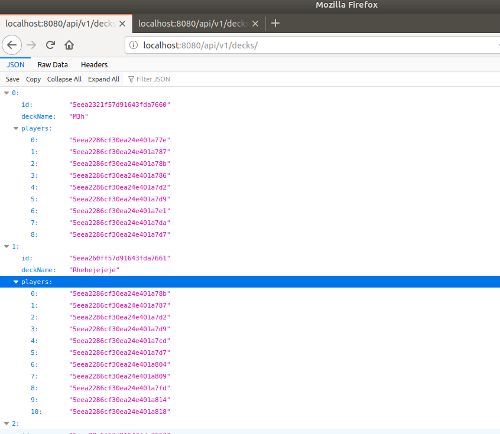

Making Football Top Trumps In React Native and Spring Boot
What is Top Trumps?
Top trumps is a multiplayer card game. The point of the game is to name a piece of data about the given card which 'trumps' other players piece of data. The person who wins that round keeps the other cards. The last person standing wins the game. There are different types of top trump card packs you can buy whether it's Top Gear Top Trumps or Football Top Trumps.

I developed the application using React-Native as the front end and spring boot as the back end of the application. I developed an API so that the front end could request cards from the API. Additionally, this way the front end can add a deck to the list of decks stored in the database.
Web Scraping
To create the application I need a lot of data about different football players in different leagues. This was a problem as APIs do exist to retrieve data about football statistics but they require you to pay for them. So I instead gathered the data myself using a technique called web scraping. I developed the Web Scraping script in Java using JSoup which allows you to query a HTML document using regular expressions to extract key information from it.

I used the website FBREF to extract information about the players this current season. Using this website I have access to most leagues in the world including leagues such as the Ukrainian Premier League (maybe not the Scottish Premiership). Using this website as a template I extract information about players from the English Premier League, the Championship, Bundesliga and Serie A. I can add more leagues at any point as my script can extract information from any league on the site.
Once the data is gathered I save it to a JSON file. So that I can load the data into a database.
From the FBREF website I extract the following key attributes:
- The number of goals the player has scored.
- The number of assists the player has got.
- The number of yellow and red cards the player has.
- The number of starts the player has.
- The number of minutes the player has played.
Using a NoSQL database (MongoDB)
Once the data is gathered I need to load it into a database for the API. I decided to use a document store to store each player's data. I used a document store as it consists of documents which a syntactically similar to JSON. Additionally it is flexible as it does not require a rigid schema like that of an SQL database meaning I can give cards special attributes if I require. Or I can add new attributes to cards without making previous cards incompatible.
Below is the result from a query in MongoDB:

The PoJos (Plain Old Java Objects) To Model The Entities
Instead of using a ERD diagram to demonstrate relations in my database it is better to use a UML diagram. As I am using a document store and the data in the objects are essentially PoJos. There are two collections in the database Players and Decks. The Players collection stores all the Player documents. Each player document has an id which uniquely identifies the player.
The other collection is the Decks collection, which stores all of the Decks documents. A deck models a top trumps deck. I designed my program so that users can create their own decks. Therefore we need to be able to add new decks to the MongoDB database as well as view them. The Deck document has an attribute titled 'players'. This is an array of UUIDs where each UUID corresponds to a Player in the Players collection.
Spring Boot
As I explained earlier I created a backend for the application in Spring Boot. Spring Boot is a Java framework which makes it easy to build and deploy a RESTful service in Java. In my model the client can either make a GET or POST request to the HTTP web server. The HTTP web server makes a JSON response to the get command.
Get All Players
As shown I can make a query to my API to get all players in the database. This does not require any parameters to perform.
Get Player By ID
Above shows how to get a specific player using my API. By passing the id in the url the springboot server fetches the required player.
Get Players By Query
This is the most complicated command I created in my spring boot server. As shown by specifying attributes and either the following logical operators >, < or = seperated by commas you can fetch a list of players conforming to these rules. The commas in the parameter represent the logical AND operator.
Get All Decks
This command simply fetches all the decks in the decks collection.
Adding Decks to the Database
There is one more command I created but as it does not produce a visual response I have not included it. Thre needs to be a defined way of adding decks to the database. This is done by using a PUT command with the localhost:8080/api/v1/decks/ endpoint and passing a JSON object of a deck.
The Front End Implemented In React-Native
UI Design
I implemented the front end using React Native which is similar to a React Web application, but the only difference is that it is runs on a device rather than manipulated with a DOM. Below is the design of the user interface for my application.
As shown you the app allows you to create your own decks, search for players, select decks and play games against other users.
The Actual App
Above shows the final app design. The app requires each player to be in the same physical location. The winner of a round presses the I won button. I decided to implement it this way as it makes it much more flexible. The users can decide what stats Trumps other stats making the app much more flexible.
When a user presses the I won button, the other users lose the card and the app displays their next card. The winner then gets the other user's cards.
The End
That is all for this week. Next week I will be learning more front end development. This is prompted by the fact all my UIs look terrible.